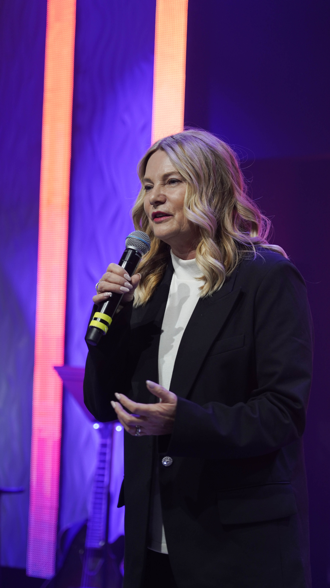
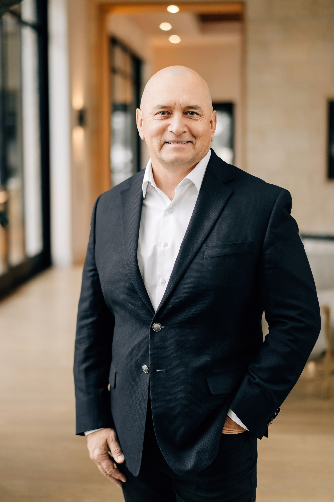

Church LA / CLA City is a Russian-speaking evangelical church in North Hollywood, Los Angeles. We follow Jesus, read the Bible, and make space for friendship and questions.
CLA serves Russian-speaking people and families from Russia, Ukraine, and other parts of the world.
Whether you are curious about Christianity or looking for a church, you are welcome to meet people, ask questions, and explore faith with us.

Our Christian faith shapes how we learn, care for one another, and live each day.
We follow Jesus and learn from his life and teaching.
The Bible guides what we believe and how we live.
We pray together and for people who ask for prayer.
We trust God to help us put what we learn into practice and care for others.
Leonid and Marina Malko began leading Church LA in 2021.
Today, we continue to welcome Russian-speaking people and families in North Hollywood and across Los Angeles.
Leonid and Marina Malko lead the church and help people feel welcome.

Since 2021, Leonid has served as senior pastor of CLA, a Russian-speaking church in Los Angeles affiliated with NHFC (LA International Christian Center).
Since his youth, Leonid has helped start churches, trained church workers, and taken part in missionary work in different countries. His experience includes work in Armenia and Siberia, leading a missionary training center in Moscow, and serving as a pastor in Los Angeles.
Today Leonid leads CLA and helps train church workers through the Missionary Training Center (mtc.today). Together with Marina, he loves meeting guests and helping people feel at home in the church.
Marina was ordained as a pastor in Los Angeles in 2021 and is CLA’s co-pastor. She also leads the women’s group.
Marina and Leonid have spent many years helping start churches and taking part in missionary work. Her experience includes children’s activities, Christian education, and women’s gatherings. She studied the Bible and trained for missionary work in Sweden and Moscow.
Marina shares messages from the Bible, prays with people, and cares for families. She wants every woman and family to find friendship, support, and a place to explore faith at CLA.
We hold to biblical Christian faith as revealed in Scripture.
Scripture is the inspired, authoritative Word of God and the church's authority for faith and life.
Jesus Christ is the only way to salvation.
There is one God, eternally existing in three persons: Father, Son, and Holy Spirit.
Salvation is by grace through faith in Jesus Christ, not by works, tradition, or personal merit.
We believe in the present work of the Holy Spirit, who fills believers and empowers ministry.
Water baptism is an outward declaration of inward faith. Communion is a regular act of remembrance and covenant.
The local church is a community called to worship, grow, serve, and send.
Prayer is central to the life of the church.
The Sunday service is in Russian.
CLA serves Russian-speaking people and families from Russia, Ukraine, and other parts of the world.
People from different countries and backgrounds are welcome to explore faith and make friends here.
Start with a visit, get to know a group, and help out when you feel ready.
Your skills, interests, and time can make a difference.